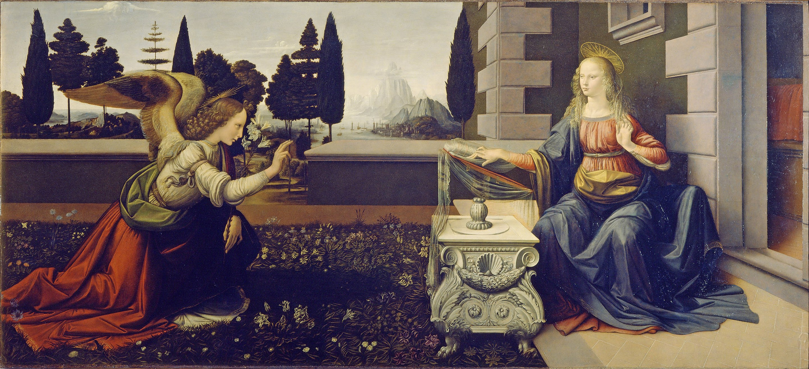

Despite the recent awareness and admiration of Leonardo as a scientist and inventor, for the better part of four hundred years his fame rested on his achievements as a painter.
A handful of works that are either authenticated or attributed to him have been regarded as among the great masterpieces. These paintings are famous for a variety of qualities that have been much imitated by students and discussed at great length by connoisseurs and critics. By the 1490s Leonardo had already been described as a "Divine" painter. Among the qualities that make Leonardo's work unique are his innovative techniques for laying on the paint; his detailed knowledge of anatomy, light, botany and geology; his interest in physiognomy and the way humans register emotion in expression and gesture; his innovative use of the human form in figurative composition; and his use of subtle gradation of tone. All these qualities come together in his most famous painted works, the Mona Lisa, the Last Supper, and the Virgin of the Rocks.

In the 1480s, Leonardo received two very important commissions and commenced another work that was of ground-breaking importance in terms of composition. Two of the three were never finished, and the third took so long that it was subject to lengthy negotiations over completion and payment.
One of these paintings was Saint Jerome in the Wilderness, which Bortolon associates with a difficult period of Leonardo's life, as evidenced in his diary: "I thought I was learning to live; I was only learning to die." Although the painting is barely begun, the composition can be seen and is very unusual. Jerome, as a penitent, occupies the middle of the picture, set on a slight diagonal and viewed somewhat from above. His kneeling form takes on a trapezoid shape, with one arm stretched to the outer edge of the painting and his gaze looking in the opposite direction. J. Wasserman points out the link between this painting and Leonardo's anatomical studies. Across the foreground sprawls his symbol, a great lion whose body and tail make a double spiral across the base of the picture space. The other remarkable feature is the sketchy landscape of craggy rocks against which the figure is silhouetted.
The daring display of figure composition, the landscape elements and personal drama also appear in the great unfinished masterpiece, the Adoration of the Magi, a commission from the Monks of San Donato a Scopeto. It is a complex composition, of about 250 x 250 centimetres. Leonardo did numerous drawings and preparatory studies, including a detailed one in linear perspective of the ruined classical architecture that forms part of the background. In 1482 Leonardo went to Milan at the behest of Lorenzo de' Medici in order to win favour with Ludovico il Moro, and the painting was abandoned.
Lady with an Ermine, c. 1489–1490, Mona Lisa or La Gioconda (1503–1505)
In 1505 Leonardo was commissioned to paint The Battle of Anghiari in the Salone dei Cinquecento (Hall of the Five Hundred) in the Palazzo Vecchio, Florence. Leonardo devised a dynamic composition depicting four men riding raging war horses engaged in a battle for possession of a standard, at the Battle of Anghiari in 1440. Michelangelo was assigned the opposite wall to depict the Battle of Cascina. Leonardo's painting deteriorated rapidly and is now known from a copy by Rubens
The creation of the design is linked to Ludovico Sforza, an Italian prince in the Renaissance era, who wanted to expand and advance both his military and the Milan region. To do so, he wanted to update the current treatise on military engineering by Roberto Valturio. Leonardo responded by writing Sforza a letter that included a number of innovative machine designs, one of which was the crossbow. Leonardo also highlighted in the letter his expertise in engineering, most likely having known that Sforza was wanting to hire military engineers at the time. Among the works created by Leonardo in the 16th century is the small portrait known as the Mona Lisa or La Gioconda, the laughing one. In the present era, it is arguably the most famous painting in the world. Its fame rests, in particular, on the elusive smile on the woman's face, its mysterious quality perhaps due to the subtly shadowed corners of the mouth and eyes such that the exact nature of the smile cannot be determined. The shadowy quality for which the work is renowned came to be called "sfumato," or Leonardo's smoke. Vasari, who is generally thought to have known the painting only by repute, said that "the smile was so pleasing that it seemed divine rather than human; and those who saw it were amazed to find that it was as alive as the original."
Other characteristics of the painting are the unadorned dress, in which the eyes and hands have no competition from other details; the dramatic landscape background, in which the world seems to be in a state of flux; the subdued colouring; and the extremely smooth nature of the painterly technique, employing oils laid on much like tempera, and blended on the surface so that the brushstrokes are indistinguishable.[y] Vasari expressed the opinion that the manner of painting would make even "the most confident master...despair and lose heart." The perfect state of preservation and the fact that there is no sign of repair or overpainting is rare in a panel painting of this date.